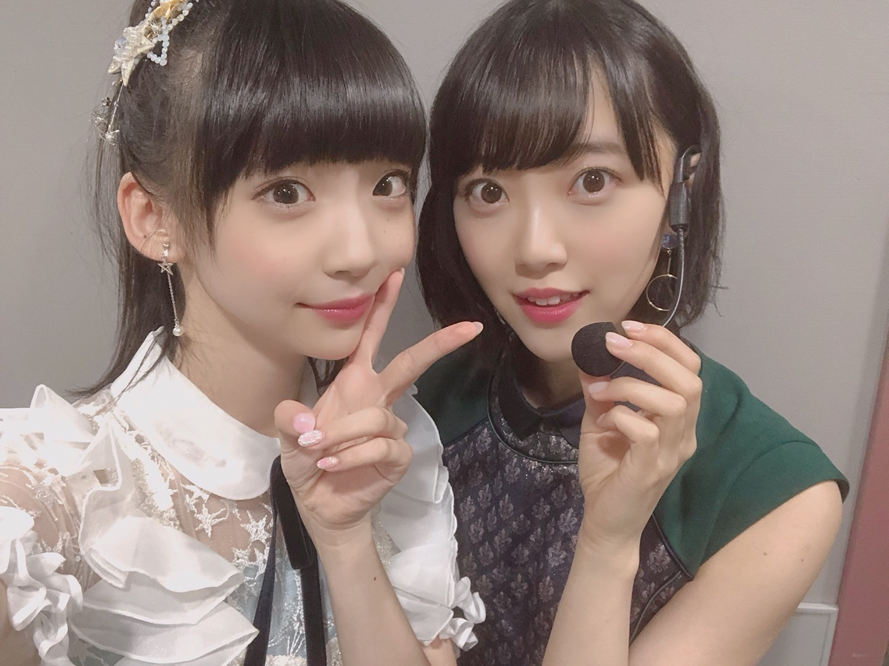

2018/0715Sun#ジコチュー
8/8 発売
ジコチューでいこう！
のジャケ写が公開されました。
オフショット〜


わたしは一応、全ポジション経験しました。笑
撮影中も美月とれんかと
わちゃわちゃ楽しかった〜♪
タイプCよろしくお願いします！


オレンジ色が夏を感じさせますね！
イヤリングおっきくてかわいい〜o(･x･)/
緑着るのも珍しいかも。

昨日大好きなゆかっちに会えて
お喋りしたり楽しかったな〜
会ってすぐ「うなばら〜♪」って
私の歌割り真似しながら指差してきた。笑
そんなゆかっちがね、
ジュース買ってくれたの♡
太っ腹！
ありがとう！
わたしは豆のお菓子ポリッピーではないからね！笑
ツアーもうすぐかぁ
楽しみです
では。
2018/07/15 15:06
コメント(434)
すき
お仕事お疲れ様でございます
ジャケ写夏らしくて可愛いです
何色着ても似合っちゃいますね！
アップされた二枚の写真は……綺麗だけど
今月号のarぐらいのオフショルがいいかな
歌番組で会えるっていうのも楽しそうです
そこでしか話せないこともあるでしょうし
今日岐阜のある地域で1番暑い気温になったみたいです
ライブで炎天下の中リハーサルあると思いますが
お体お気をつけて下さい
身体崩さないことを願っています
ジャケ写夏らしくて可愛いです
何色着ても似合っちゃいますね！
アップされた二枚の写真は……綺麗だけど
今月号のarぐらいのオフショルがいいかな
歌番組で会えるっていうのも楽しそうです
そこでしか話せないこともあるでしょうし
今日岐阜のある地域で1番暑い気温になったみたいです
ライブで炎天下の中リハーサルあると思いますが
お体お気をつけて下さい
身体崩さないことを願っています
未央奈かわいーな
こんばんは！
ジャケ写の緑の衣装、映えてる
緑色は好きな色だなぁ
未央奈のいい女感が、めっちゃ伝わってくる(笑)
音楽の日のウインクは、バッチリきまってて可愛かったよ
ツアーもうすぐだね、楽しみ
平成最後の夏、弾けよう
ばいばいっ
ジャケ写の緑の衣装、映えてる
緑色は好きな色だなぁ
未央奈のいい女感が、めっちゃ伝わってくる(笑)
音楽の日のウインクは、バッチリきまってて可愛かったよ
ツアーもうすぐだね、楽しみ
平成最後の夏、弾けよう
ばいばいっ
ジャケ写可愛いなぁ♫
今回のシングルジャケ全部好きやぁ
もち、タイプCもゲットするぜ！
ジコチューでいこう夏感満載でめっちゃ好き！
はやく全ツで聴きたいわぁ〜
特に特に、ナゴヤドームで聴きてぇ〜〜〜
みおなの服セクシーっすな（笑）
バレッタの時はまだ子供感あったけど、魅力的な女性になられた。惚れてまうやろぉ〜
ジュース奢ってもらったんかい！
羨ま〜。そして、ゆかちゃん太っ腹やね（笑）
さぁさぁさぁ！全ツ！今年も熱い夏になるぜ〜！
今回のシングルジャケ全部好きやぁ
もち、タイプCもゲットするぜ！
ジコチューでいこう夏感満載でめっちゃ好き！
はやく全ツで聴きたいわぁ〜
特に特に、ナゴヤドームで聴きてぇ〜〜〜
みおなの服セクシーっすな（笑）
バレッタの時はまだ子供感あったけど、魅力的な女性になられた。惚れてまうやろぉ〜
ジュース奢ってもらったんかい！
羨ま〜。そして、ゆかちゃん太っ腹やね（笑）
さぁさぁさぁ！全ツ！今年も熱い夏になるぜ〜！
僕も未央奈と同じ岐阜出身 !!
みおなかわいいよ！
未央奈、
今日は握手会2部で
ぱっつん前髪外ハネショートボブに
ピンクドレスワンピースの
超絶きれいな未央奈に会えてうれしかったよ。
今日は 未央奈に
・オシャレできれいだね
・神宮、秩父宮よかったよ
・ar アイメイクの未央奈は
すっごくきれいだったよ
・Show Room もよかったね
って、伝えられてよかったよ。
次の握手会は10月13日だね。
また、とってもきれいな未央奈に
1部、2部、3部(めずらしくいっぱい当たった！)で
会えるのを楽しみにしてるね〜。
「Platinum Flash」では、
裏表紙の未央奈が、なんか
昔の未央奈っぽいかわいらしい顔だったね。
チェンマイで
アジア風の服を着て
落ち着いたきれいな表情の未央奈は
美しかったよ。
チェンマイの旅って楽しそうだね。
レコメン では未央奈のドキドキセリフが、
すっごくよかったよ。
「ar」では、
未央奈は色んなアイメイクが似合ってたね。
最初の 頬杖ついてる笑顔の未央奈は
超絶かわいいね。
顔を傾けて髪の毛垂らして
微笑んでる未央奈もすっごくかわいいよ。
髪の毛アップの未央奈も
目力があってきれいだね。
濃紺ワンピースでキリッとした表情の未央奈も
とっても美しいよ。
湯呑みは、良い形のが作れたね。
土だらけの手で頑張ってる未央奈が
よかったよ。
次のシングル活動もフロントで頑張ってね。
真夏の全国ツアーは暑さに負けずに
身体に気をつけて頑張っていってね〜。
今日は握手会2部で
ぱっつん前髪外ハネショートボブに
ピンクドレスワンピースの
超絶きれいな未央奈に会えてうれしかったよ。
今日は 未央奈に
・オシャレできれいだね
・神宮、秩父宮よかったよ
・ar アイメイクの未央奈は
すっごくきれいだったよ
・Show Room もよかったね
って、伝えられてよかったよ。
次の握手会は10月13日だね。
また、とってもきれいな未央奈に
1部、2部、3部(めずらしくいっぱい当たった！)で
会えるのを楽しみにしてるね〜。
「Platinum Flash」では、
裏表紙の未央奈が、なんか
昔の未央奈っぽいかわいらしい顔だったね。
チェンマイで
アジア風の服を着て
落ち着いたきれいな表情の未央奈は
美しかったよ。
チェンマイの旅って楽しそうだね。
レコメン では未央奈のドキドキセリフが、
すっごくよかったよ。
「ar」では、
未央奈は色んなアイメイクが似合ってたね。
最初の 頬杖ついてる笑顔の未央奈は
超絶かわいいね。
顔を傾けて髪の毛垂らして
微笑んでる未央奈もすっごくかわいいよ。
髪の毛アップの未央奈も
目力があってきれいだね。
濃紺ワンピースでキリッとした表情の未央奈も
とっても美しいよ。
湯呑みは、良い形のが作れたね。
土だらけの手で頑張ってる未央奈が
よかったよ。
次のシングル活動もフロントで頑張ってね。
真夏の全国ツアーは暑さに負けずに
身体に気をつけて頑張っていってね〜。
個握、お疲れ様でした。
2、4、5部に行かせて頂きました。
1部欠席で体調不良を心配してたら、いつも通りの神対応。
感動すら覚えました。
握手会ではいつも笑顔を絶やさず、どんな話にも真剣に耳を傾けてくれる。
絢音ちゃんに『お姉ちゃん』と慕われる、しっかりした一面。
どこか儚げなイメージだけど、芯は強くブレない。
未央奈ちゃんには色が無いのではなく、元々沢山の魅力や色を持ち、歳を重ねると共に一つ一つに輝きを増しているのだと思う。
今の未央奈ちゃんなら、何年か前に手の届かった『第2の聖母』の称号もピッタリな気がします。
て言うか、僕達ファンにとっては既に聖母です。
『顔だけ総選挙』、自分も未央奈ちゃんに1票入れました。
ただ、どこか引っかかる。
『未央奈ちゃんは顔だけじゃ無い』と声を大にして言いたい。
『顔だけでも総選挙』にタイトル変えられないものでしょうかね？
どうか無理だけはなさらずに、これからも末永く活躍して下さい。
とりあえず今週末、福岡に応援しに行きます❗️
2、4、5部に行かせて頂きました。
1部欠席で体調不良を心配してたら、いつも通りの神対応。
感動すら覚えました。
握手会ではいつも笑顔を絶やさず、どんな話にも真剣に耳を傾けてくれる。
絢音ちゃんに『お姉ちゃん』と慕われる、しっかりした一面。
どこか儚げなイメージだけど、芯は強くブレない。
未央奈ちゃんには色が無いのではなく、元々沢山の魅力や色を持ち、歳を重ねると共に一つ一つに輝きを増しているのだと思う。
今の未央奈ちゃんなら、何年か前に手の届かった『第2の聖母』の称号もピッタリな気がします。
て言うか、僕達ファンにとっては既に聖母です。
『顔だけ総選挙』、自分も未央奈ちゃんに1票入れました。
ただ、どこか引っかかる。
『未央奈ちゃんは顔だけじゃ無い』と声を大にして言いたい。
『顔だけでも総選挙』にタイトル変えられないものでしょうかね？
どうか無理だけはなさらずに、これからも末永く活躍して下さい。
とりあえず今週末、福岡に応援しに行きます❗️
音楽の日見ました！！
ウインク惚れました笑
ライブ頑張ってください！
ウインク惚れました笑
ライブ頑張ってください！
未央奈可愛い！
乃木坂21thシングルの通常盤と全タイプのCD&DVDもうセブンネットで予約したよ。
あと、熱中症に気をつけてネッ。
あと、熱中症に気をつけてネッ。
未央奈ちゃんこんばんは‼ありがとうございます‼頑張ります‼楽しみにしてます‼頑張ります‼頑張って下さい！ありがとうございます‼ライブ頑張って下さい
大好き
堀ちゃんセクシ～ィ！！
ブログ更新ありがとう✨
夏って感じのジャケ写が良きだね♪
もう今週末が福岡公演なんか〜！
美味しいものもいっぱい食べて
ツアー頑張ってね٩( 'ω' )و
夏って感じのジャケ写が良きだね♪
もう今週末が福岡公演なんか〜！
美味しいものもいっぱい食べて
ツアー頑張ってね٩( 'ω' )و
みおなちゃん！！！
大好きです！
応援してます！！
大好きです！
応援してます！！
タイプCで了解しました。
緑の衣装は珍しいですね。
緑の衣装は珍しいですね。
未央奈可愛すぎ。神
未央奈ちゃん、こんばんは。21stシングル「ジコチューで行こう」のジャケット写真が公開になったね！タイプCいいね☆ 結局セブンネットでA〜D＋通常版の全５種類セット予約しちゃったよ。シンクロニシティライブ、明治神宮野球場と秩父宮ラグビー場の２会場同時ライブ、西野さんの笑顔が画面いっぱいに広がったのを含めてみんなの笑顔が素敵な気持ちにさせてくれて楽しいライブになったんじゃないかなと画面を通してだけにはなってしまってるけど、すごく嬉しい気持ちになったよ。未央奈ちゃんの姿もよく映ってたね。夏の全国ツアーは続くけど、各地で乃木坂の良さが伝わる素敵なものになるといいね。ライブ映像見てて思ったけど、みんな綺麗になっていくなぁ。未央奈ちゃんも当初の幼い顔立ちからすると、ほんと綺麗になった！やっぱり乃木坂に入ると活動を通して綺麗になっていくっていうのは凄いことだなぁって思う。またね！
未央奈ちゃん、おはよう。
ジコチューのジャケ写カワイイです、タイプC了解です。緑色にオレンジって夏らしい。
全国ツアーでも披露されるだろうから、今から楽しみです。ワクワクです。
乃木坂46と頑張ってるcuteでsmartな未央奈ちゃんを応援しています。
ジコチューのジャケ写カワイイです、タイプC了解です。緑色にオレンジって夏らしい。
全国ツアーでも披露されるだろうから、今から楽しみです。ワクワクです。
乃木坂46と頑張ってるcuteでsmartな未央奈ちゃんを応援しています。
堀ちゃんおはよう！
確かに緑のイメージないかも。
3期生達とも仲よさそうで、
なによりなにより！
今回のジャケ写の堀ちゃん、
なんかいつもと違う気がするなー。
確かに緑のイメージないかも。
3期生達とも仲よさそうで、
なによりなにより！
今回のジャケ写の堀ちゃん、
なんかいつもと違う気がするなー。
ジコチューのジャケ写超可愛いです！！！！
堀さんの着てる衣装も可愛い！
その衣装握手会で着てほしいな〜（笑）
今回のシングルは堀さんが参加してる曲が少なくて残念です
だけどまだカップリングとかどんんな曲なのか分からないのでワクワク
今週末の福岡のライブ行きます！
楽しみです！！
バスラからもう2週間も経つのかと思えば早いですよね…
堀さんタオルとうちわめっちゃ振るので見つけてください！
堀さんの着てる衣装も可愛い！
その衣装握手会で着てほしいな〜（笑）
今回のシングルは堀さんが参加してる曲が少なくて残念です
だけどまだカップリングとかどんんな曲なのか分からないのでワクワク
今週末の福岡のライブ行きます！
楽しみです！！
バスラからもう2週間も経つのかと思えば早いですよね…
堀さんタオルとうちわめっちゃ振るので見つけてください！
ブログ更新ありがとう。
ジコチュー発売を楽しみにしてます。
未央奈さんの明日が幸せで溢れた１日になりますように。
では、またね(^-^)/
ジコチュー発売を楽しみにしてます。
未央奈さんの明日が幸せで溢れた１日になりますように。
では、またね(^-^)/
堀ちゃんブログありがとー。
ツアーめっちゃ楽しみです
ツアーめっちゃ楽しみです
ブログ更新ありがとう‼
可愛いよ‼
これからも身体に気を付けて頑張ってください
応援してます‼
可愛いよ‼
これからも身体に気を付けて頑張ってください
応援してます‼
福岡楽しみ！！楽しもうね！！！みおな！
ほりちゃんブログ更新ありがとう！！！
活動頑張って下さい！！！！
レコメン楽しみです！
活動頑張って下さい！！！！
レコメン楽しみです！
ほりちゃんブログ更新ありがとう！！！
活動頑張って下さい！！！！
レコメン楽しみです！
活動頑張って下さい！！！！
レコメン楽しみです！
緑似合うね～(^o^)
みおなの衣装似合ってるね！
スタイル良い！
おぎゆかとみおなって似てるよね(・Д・)！？
顔やスタイルとか(・Д・)？
スタイル良い！
おぎゆかとみおなって似てるよね(・Д・)！？
顔やスタイルとか(・Д・)？
堀ちゃんの外ハネショートめちゃめちゃ似合ってる！大好きです
『ジコチューで行こう！』
夏を感じさせる衣装とアクセサリー☆
その緑、西瓜を彷彿とさせる色でもあるよね☆
しかも、履いてるのが赤だし☆
シチュエーションはプールの飛び込み台で落ちそうになってる、いや、落としてしまった物を掴もうと手を伸ばした瞬間かもしれない、いや、蓮加ちゃんが後ろから押そうとしてるシーンかな(´ﾟдﾟ｀)
色んな想像が出来るジャケットで面白いです(*´▽｀*)
堀ちゃんの緑、しかも結構濃い緑☆
似合ってますのん(*´ω｀*)
慶次郎でした。
夏を感じさせる衣装とアクセサリー☆
その緑、西瓜を彷彿とさせる色でもあるよね☆
しかも、履いてるのが赤だし☆
シチュエーションはプールの飛び込み台で落ちそうになってる、いや、落としてしまった物を掴もうと手を伸ばした瞬間かもしれない、いや、蓮加ちゃんが後ろから押そうとしてるシーンかな(´ﾟдﾟ｀)
色んな想像が出来るジャケットで面白いです(*´▽｀*)
堀ちゃんの緑、しかも結構濃い緑☆
似合ってますのん(*´ω｀*)
慶次郎でした。


もうすぐツアーが始まる。。名古屋に行きます！
今日は。ちはるさん・いおりさんの乃木坂最後の日。